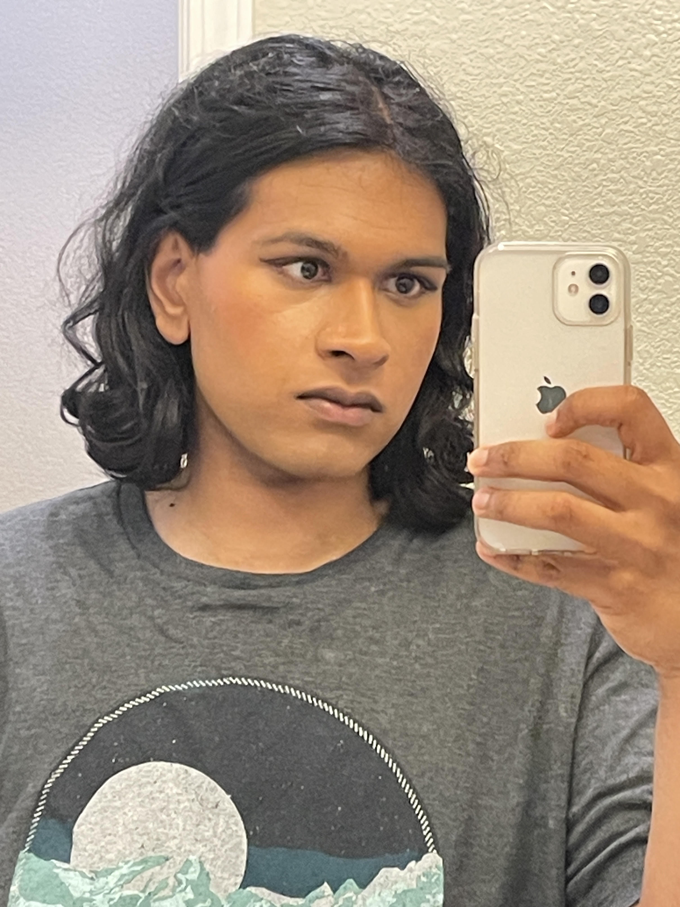

Pronouns: She/Her
Email: akgunase@ucsc.edu
Hello! My name is Skye and I am a 3rd year computer science major at UC Santa Cruz. I am an AI researcher studying under Prof. Jason Eshraghian, where my work involves the intersection of neuroscience and AI for time-series applications. More specifically, I am developing frameworks for forecasting and event prediction which utilize information from the future. Outside of research, I am a pc hardware nerd, and a novice makeup artist.